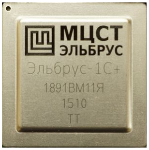
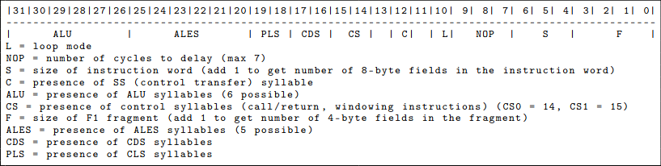
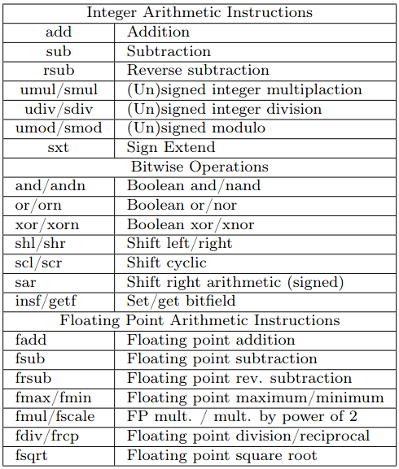

Путеводитель по Эльбрусу
Автор: evm
(перевод)
Следуя традициям многих замечательных туристических путеводителей, опубликованных в нашем прекрасном издании, давайте совершим волшебное путешествие по современной компьютерной архитектуре "Эльбрус 2000", разработанной в матушке России.
Что мы имеем
Основные модели
Elbrus-1S+, Elbrus-4S, Elbrus-85, Elbrus-8SV, Elbrus-16S
Архитектура
Фон Нейман
Очень широкое командное слово (VLIW)
Управление регистровым окном (32-разрядные базовые регистры)
Регистры
g0-g31: Глобальные регистры
r0-r17: Универсальные (оконные) регистры
bO-b7: Регистр наложения окна
Pred0-Pred31: Регистры логических предикатов
Адресное пространство
64-разрядная виртуальная адресация
Неизвестная нам физическая карта памяти

Предыстория и история
"Эльбрус" - это российская архитектура процессоров, которая в той или иной форме существует уже более 40 лет. Все началось в Институте точной механики и вычислительной техники им. Лебедева. Это был первый суперскалярный процессор с out-of-order исполнением, разработанный в Советском Союзе (когда "Эльбрус-1" дебютировал в 1979 году). В 1990 году архитектура Elbrus 3 была расширена до архитектуры с очень длинными инструкциями (VLIW). После полной интеграции в качестве микропроцессорной архитектуры в 2001 году (ранее в предыдущих версиях использовалось много дискретных микросхем), архитектура стала известна как Elbrus 2000 (сокращенно E2K). "Эльбрус" разработан в России, но в настоящее время производится компанией TSMC на Тайване из-за нехватки российских производственных мощностей, способных производить чипы на передовых технологических нормах. 48
В начале 90-х годов из Института Лебедева было выделено акционерное общество "Московский центр SPARC технологий" (сокращенно - МЦСТ). В настоящее время МЦСТ производит новые чипы "Эльбрус" для ПК, ноутбуков и серверов на базе "Эльбруса". В настоящее время Elbrus-8S и 8SV являются самыми современными моделями процессоров (восьмиядерные версии для серверов и настольных компьютеров), а также доступны более дешевые 1S+ (одноядерные). Обратите внимание на транслитерацию с кириллицы, где названия моделей выглядят как Эльбрус-8S, Эльбрус-8CB и Эльбрус-1C+ соответственно. Как ни странно, процессоры 8S примерно в три раза медленнее аналогичных процессоров Intel, 49 но преимущество Эльбруса в том, что это полностью отечественный процессор российского производства. Сообщается, что российские военные заказали тысячи ноутбуков в защищенном исполнении на базе Эльбрус-1S+ 50, хотя нет никаких указаний на то, что этот заказ когда-либо был доставлен.
В настоящее время существует очень мало общедоступной документации по Elbrus, поскольку MCST контролирует большую часть документации в соответствии с соглашениями о неразглашении. Это означает, что у нас нет полной документации по процессору, как это обычно бывает с коммерческими процессорами.
Для этой статьи мы использовали три источника информации:
В настоящее время MCST находится в санкционном списке США, но благодаря проведению и нашим друзьям мы получили доступ к компьютеру Elbrus-1S+ и использовали его для проверки работы некоторых примеров кода. На нашем Эльбрусе была установлена версия Linux производства MCST, но для Эльбруса также доступны другие российские дистрибутивы Linux (например, Astra Linux). В машине Elbrus есть компилятор под названием lcc, который является компилятором MCST, основанным на gcc (на самом деле, нет. - прим. переводчика) . Он создает стандартные двоичные файлы Linux ELF. На данный момент возможности для дизассемблирования ограничены ldis, который является частью lcc, и objdump, который является частью пакета binutils, выпущенного OpenE2K group. ldis обеспечивает более чистый вывод, включая разрешение имен символов, в то время как objdump имеет флаг отладки в сборке, который будет предварять вывод декодированными инструкциями в шестнадцатеричном формате. Как ни странно, ldis, похоже, упускает некоторые моменты (например, не разбирает все функции), хотя это может быть связано с ошибкой оператора.
Чтобы изучить набор инструкций Elbrus, мы обновили rix's Smashing C++ VPTRs из Phrack 56:8. Это целая история, которая будет рассказана в другой раз, но вы найдете мои примеры кода и соответствующую разборку кода Elbrus, приложенную к этому PDF-файлу. 52
Основы декодирования набора команд
Первое, что нам нужно было выяснить, - это как устроен формат инструкции, поскольку в официальной документации эта тема полностью отсутствовала. К счастью, мы обнаружили, что в выпуске OpenE2K binutils есть флаг препроцессора ENABLE_E2K_ENCODINGS, который заставляет objdump распечатывать байты команд и их группы.53 Версия objdump с этим флагом была именно той, что мы использовали для выполнения разборки большей части данной статьи.
В документации Elbrus VLIW называется "широкой командой". Широкая команда содержит несколько инструкций, каждая из которых предназначена для отдельных исполнительных блоков в конвейере процессора. В документации по-разному используются термины "команды" (commands), “инструкции” (intruction) и “операции” (operations) для обозначения компонентов инструкции в полном командном слове.
Код OpenE2K objdump описывает способ кодирования команд компонентов в виде “слогов”. Приятной особенностью Elbrus является то, что кодировка команд довольно проста по сравнению с современными DSP-архитектурами, с которыми мы ранее сталкивались. Подсчет длинны команды - это эксплуатационная задача, которая может быть довольно сложной на некоторых архитектурах, но не на Elbrus. Определить длину команды по начальному слогу “HS” довольно просто (показано далее).
Слог HS определяет наличие других слогов инструкции, которые располагаются в определенном порядке. Порядок такой: SS; ALU; CS0; ALES полуслоги 2 и 5; CS1; ALES полуслоги 0, 1, 3 и 4; полуслоги AAS; проверка пробелов; CDS; PLS; и, наконец, LTS (литералы).
Буквальные данные слогов (т.е. непосредственные значения) располагаются в конце слогов. Код OpenE2K objdump ищет все указанные выше флаги наличия слогов, считывает их по порядку (учитывая возможные пробелы), а затем сравнивает количество прочитанных слогов с полем размера в HS. Любые дополнительные слоги считываются как литералы. Для слогов, содержащих "полуслоги" (т.е. 16-разрядные значения), порядок следования слогов меняется по мере их последовательного появления в памяти.
Byte order | 0 | 1 | 2 | 3 | 4 | 5 | 6 | 7 |
---------------------------------
Half syllable order | 1 | 0 | 3 | 2 |
Тайный смысл вы поймете, если вы задумаетесь о том, что байты считываются как 4-байтовые значения в порядке убывания:
Word order | 0 | 1 |
---------------------------------
Byte order | 3 | 2 | 1 | 0 | 7 | 6 | 5 | 4 |
---------------------------------
Half syllable order | 0 | 1 | 2 | 3 |
Набор регистров
Базовые регистры Elbrus состоят из 18 регистров общего назначения (r0–r17), 32 глобальных регистров (g0–g31) и скользящего набора оконных регистров (b0–b7). Подробнее об управлении регистровым окном будет рассказано в следующем разделе. Имена регистров имеют префикс ширины доступа, аналогичный x86.
Например, регистр sr0 - это одинарный (single) 32-разрядный r0, а dr0 - это двойной (double) 64-разрядный r0, который используется по умолчанию. Когда регистры используются со значениями с плавающей запятой, используется xr0, который является 80-разрядной версией, предположительно использующей формат long double из x86. Согласно документации, к двум двойным регистрам можно получить доступ как к четверному (quad) регистру – например, qr[i], где [i] является четным, – но gdb в нашем случае, похоже, не знает об этом обозначении.
ВНИМАНИЕ: в Elbrus размер слова равен 32 битам как для регистров, так и для доступа к памяти, поэтому значение single/double/quad в Elbrus в два раза больше, чем в 64-разрядных версиях x86, где длина слова восходит к его ранним предкам.

Кодировка начального слога HS, который определяет наличие других слогов
в слове-инструкции для всего командного языка Эльбрус.
Неясно, для чего используются слоги ALES, CDS и PLS,
поскольку мы не генерировали ни одну из этих инструкций в примере кода.
Основные арифметические операции и операции с памятью в Elbrus
В следующей таблице собраны различные операции с регистром ALU:

Базовая инструкция ALU выглядит следующим образом:
ALS0 1181d48d addd,0 %dr1, _f16s,_lts0hi 0xfff0, %dr13
Это переводится как "добавить в режиме двойной точности, используя канал 0, значение 64-разрядного регистра %dr1 к 16-разрядному значению со знаком 0xfff0, и поместить результат в регистр dr13". Существует шесть каналов ALU, поэтому вы можете выполнять до шести команд ALU в одной общей команде. Команды простого "перемещения" регистра (MOVE) не существует, поэтому компилятор обычно использует сложение с нулем в качестве команды перемещения. Полный список операций с регистром ALU приведен в таблице выше. Обратите внимание, что это довольно небольшое количество операций. За пределами конструкций, используемых для обслуживания VLIW, набор команд Elbrus выглядит довольно похожим на RISC.
Операции с памятью также довольно просты. Операции загрузки и сохранения данных могут иметь различные спецификаторы ширины. Адреса могут выражаться как регистр плюс непосредственное смещение или как сумма двух регистров. Вот пример базовой операции загрузки:
ALS0 678dc08c ldd,0 %dr13, 0x0, %dr12
ldis переводит это (немного более четко) как:
ldd,0 [ %dr13 + 0x0 ], %dr12
Данная команда расшифровывается как "загрузить двойное слово (64-разряда) из памяти, используя канал 0, с адреса dr13 +0 и сохранить в регистре dr12". Существуют также операции загрузки/сохранения массива в памяти (ldaa/staa), которые работают аналогично. Насколько мы можем судить из документации, режим массива не добавляет какой-либо специальной адресации. Это все равно сумма двух регистров или регистр плюс константа; главное преимущество заключается в том, что есть встроенная операция постинкремента.
Управление регистровым окном
Вероятно, самый простой способ понять, как происходит управление регистровым окном, заключается в том, что оно функционирует аналогично локальным переменным в стековом фрейме, выделенном в стековой памяти. В процессорах без регистрового окна (которыми являются почти все семейства процессоров, за некоторыми заметными исключениями, такими как SPARC и Itanium) мы привыкли кодировать перенос регистров между вызовами функций, что означает, что некоторые регистры необходимо сохранять в стековой памяти или переносить в незащищенные регистры перед вызовом функции. То есть, мы обычно используем гарантии, предоставляемые двоичным интерфейсом приложения ABI, чтобы вызываемая функция произвольно не изменяла заданные регистры.
Функция (написанная с разумной сложностью) сохранит регистры, которые она не должна изменять, в стековую память, чтобы эти регистры были доступны для изменений и вычислений. А затем, в конце выполнения функции, будет сделано восстановление предыдущих значений регистров из стека.
Управление окнами регистров направлено на то, чтобы уменьшить некоторые накладные расходы на объединение сохраняемых регистров в группы, сделав функцию сохранения регистров более похожей на сохранение в стековую память. По сути, в Эльбрусе, вместо того, чтобы функция выделяла для себя фрейм стека, функция выделяет для себя окно регистров.
В Elbrus это выполняется в прологе функции с помощью команды setwd. После выполнения команды setwd, "регистр" r0 на самом деле является ссылкой на первый элемент в регистровом окне. Теперь функция может использовать значения от r0 до r<N> без необходимости сохранять какие-либо регистры из вызывающей функции. Как насчет передачи параметров в регистрах? Как и в архитектурах с параметрами, передаваемыми через стек, нам нужна вызывающая функция и вызываемая функция, которые будут совместно использовать перекрывающуюся область в регистровом файле.
Это делается с помощью параметра wbs в инструкции вызова подпрограммы (функции). wbs указывает начало расположения параметров совместно используемых основным кодом и функцией в текущем окне. После вызова значение r0 в вызываемой функции теперь относится к началу области совместно используемых параметров. Это проиллюстрировано на рисунке, где вызывающая функция имеет окно размером N и вызывает функцию, которая выделяет окно размером K:
Elbrus также предлагает скользящий или подвижный базисный регистр (b), который может использовать функция в своем собственном функциональном окне. Базисный регистр - это просто некоторое смещение для наложения на существующее окно регистра; он указывает на данные регистров в окне. Для доступа к регистрам через базисный регистр, используется запись в виде массива — например, db[0] означает “доступ к первому двойному регистру (64-разрядному) по базисному указателю”. Для установки этого указателя используется команда set-bn.
Операнд rbs (смещение для установки регистра b от основания окна) также задается как quad words. На практике это выглядит так, что lcc использует базовый указатель для указания на область параметров, поэтому db[0], db[1], db[2] и т.д. являются параметрами 0, 1, 2 и т.д. для функций, которые должны быть вызваны.
Поскольку функции возвращают значения в dr0, это также означает, что db[0] содержит возвращаемое значение с точки зрения вызывающего кода.
Вызовы и ветвления в Эльбрусе
Вызовы и переходы в Elbrus несколько уникальны, они выполняются в два этапа, а не в виде одной команды, как это работает в большинстве архитектур. Elbrus использует команду disp для настройки любой команды передачи управления. При этом регистру ctptr1 присваивается целевой адрес. Команда call выполняет передачу управления. Это позволяет конвейеру получать небольшое предварительное предупреждение о вызове, позволяя ему настроить состояние для целевой функции, которое может быть отменено или проигнорировано, если вызов не выполняется. В документации упоминается часть ipd, в которой указывается некая “глубина подкачки”, но неясно, что это означает.